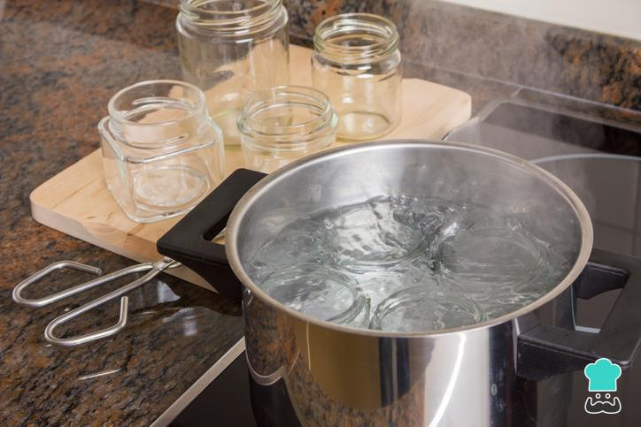
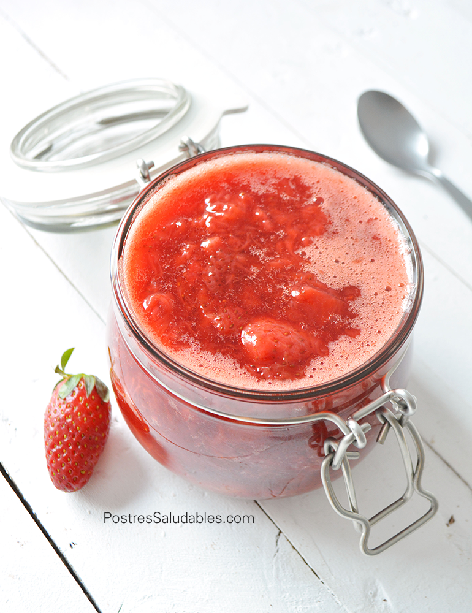

Noticias Rápidas
¡Mantente al día con nuestras novedades, anuncios especiales y eventos! Aquí encontrarás las actualizaciones más recientes sobre Mermelab y la comunidad de amantes de las mermeladas.
Lanzamiento: Guía de Mermelada de Fresa
Ya está disponible nuestra guía completa para preparar la mermelada de fresa perfecta. Incluye paso a paso con fotos, consejos para conservar mejor el color y la textura, y variaciones con hierbas y cítricos. Encuéntrala en la sección de Recursos y empieza a experimentar con esta fruta clásica.
Publicado: 20 de Abril, 2025
Próximo Curso Gratuito
Ya están abiertas las inscripciones para nuestro curso virtual gratuito de conservación casera, donde aprenderás desde técnicas de esterilización hasta creación de etiquetas para tus frascos. ¡Cupos limitados! Inscríbete ahora.
Anunciado: 15 de Abril, 2025
Evento Anual de Conservas
¡Reserva la fecha! Nuestro Festival Anual de Mermeladas se celebrará este julio con talleres presenciales, concurso de recetas, degustaciones y charlas con expertos.
Anunciado: 1 de Abril, 2025
Nuevo eBook Gratuito Disponible
Descarga nuestro primer eBook con 10 recetas de mermelada, desde las tradicionales hasta combinaciones más atrevidas. ¡Ideal para imprimir o usar desde tu celular!
Publicado: 25 de Abril, 2025
Colaboración con Agricultores Locales
Nos enorgullece anunciar una colaboración con productores locales para promover el uso de frutas frescas y de temporada en nuestras recetas. ¡Apoyemos lo local!
Anunciado: 12 de Abril, 2025
Blog de Mermelab
En esta sección encontrarás artículos detallados sobre técnicas, ingredientes, consejos y curiosidades del mundo de la mermelada. ¡Explora, aprende y experimenta!
Cómo Hacer Mermelada Saludable Sin Azúcar Añadido
Publicado el 10 de Abril, 2025 por Lisandra

¿Buscas reducir el azúcar sin sacrificar el sabor? En este artículo exploramos alternativas naturales como la stevia, el eritritol y el uso de frutas de alto dulzor natural como los higos o las cerezas. Además, te damos consejos para conservar la textura y mejorar la vida útil de tus mermeladas sin conservantes artificiales.
Leer Más (en esta página) »
La Importancia de Esterilizar Frascos: Guía Paso a Paso
Publicado el 1 de Abril, 2025 por Enyermi

La esterilización de frascos es una parte esencial del proceso de conservación casera. Te mostramos cómo hacerlo en agua hirviendo, en horno o incluso en lavavajillas, y te explicamos por qué es fundamental para evitar bacterias y asegurar que tus mermeladas se mantengan seguras y deliciosas por más tiempo.
Leer Más (en esta página) »
Mermelada de Fresa Perfecta: Textura y Sabor Clásico
Publicado el 22 de Abril, 2025 por Lisandra

Aprende a preparar una mermelada de fresa tradicional con sabor auténtico y textura ideal. Incluye consejos para potenciar el aroma con jugo de limón y tips para evitar que el azúcar cristalice. Además, te contamos cómo lograr una cocción precisa para conservar el color vibrante de las fresas.
Leer Más (en esta página) »
¿Vidrio o Plástico? Elegir el Mejor Envase para tus Conservas
Publicado el 5 de Abril, 2025 por Moises
¿Cuál es el mejor envase para tus mermeladas? Comparamos frascos de vidrio y envases plásticos considerando su durabilidad, seguridad alimentaria y sostenibilidad. Una guía útil si estás comenzando a vender o regalar tus conservas caseras.
Leer Más (en esta página) »